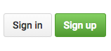

Using GitHub as a publishing tool helps us do a few things:
git version control system.Sign up at GitHub.com
Use an email you can check, you will have to confirm your email.
For now we will be using the GitHub Desktop client to learn the basics of git and Github.
Download the GitHub Desktop Client here.
Our school computer may have an older version that looks a bit different but they have most of the same functionality.
Follow the steps to login to your account:


Once logged in, you will add a new respository by cloning the story repo on my account.
I will invite everyone as a collaborator on the story repo. You will get an email and you need to accept the invitation:
Once you accept the invitation you will be able to clone the repo. If you do not see the repo in the clone list, try quitting and restarting the GitHub client.
Once you have cloned the repo, you need to choose a root folder. I suggest adding something to your Desktop.
Today we're just going to edit README.md. When you make a chance you will see the update in your GitHub Client.

You can write a commit message, commit to master.
The GitHub client will sync the changes for you.
If you are ever signed out, you can log back in back going to GitHub Desktop > Preferences > Accounts and sign in again.
You can also open preferences with the key command: C,
Once you have successfully cloned a repo and committed a change, you can start experimenting by creating your own repository: